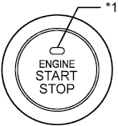
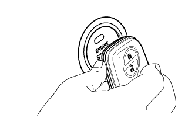

СИСТЕМА ПОСАДКИ И ЗАПУСКА (для функции запуска) > ОПИСАНИЕ СИСТЕМЫ |
| ОПИСАНИЕ СИСТЕМЫ ЗАПУСКА С ПОМОЩЬЮ НАЖИМНОГО ПЕРЕКЛЮЧАТЕЛЯ |
В функции запуска с помощью нажимного переключателя используется выключатель зажигания нажимного типа, которым водитель может управлять, просто поднося ключ. К основным устройствам этой системы относятся ЭБУ распределения питания, выключатель зажигания, блок идентификационного кода, ЭБУ блокировки рулевого управления, ключ, реле ACC, реле IG1, реле IG2 и ЭБУ сертификации. Система работает под управлением ЭБУ распределения питания. Данная функция работает согласованно с системой посадки и запуска.
| НАЗНАЧЕНИЕ УЗЛОВ И ДЕТАЛЕЙ |
| Устройство | Назначение |
| Выключатель зажигания - Усилитель электронного ключа зажигания | Информирует водителя о режиме источника питания или неисправности системы включением индикатора. |
| ЭБУ распределения питания |
|
| ЭБУ сертификации |
|
| Выключатель стоп-сигналов*1 | Передает информацию о состоянии педали тормоза в ЭБУ распределения питания. |
| Датчик положения паркинга/нейтрали*1 | Передает состояние рычага переключения передач в ЭБУ распределения питания. |
| Пусковой переключатель муфты*2 | Передает состояние педали сцепления в ЭБУ распределения питания. |
| ЭБУ блокировки селектора*1 | Передает сигнал ЭБУ блокировки селектора в ЭБУ распределения питания. |
| Блок идентификационного кода |
|
| ECM |
|
| КОНСТРУКЦИЯ И ПРИНЦИП РАБОТЫ |
|  |
| *1 | Индикатор |
Выключатель зажигания
Выключатель зажигания содержит переключатель без фиксации положения, цветные светодиоды (желтый и зеленый) и усилитель электронного ключа зажигания.
Состояние индикатора
| Режим/состояние источника питания | Состояние индикатора | |||
| Педаль тормоза отпущена*1 | Педаль тормоза нажата, рычаг переключения передач находится в положении P или N*1 | Педаль сцепления отпущена*2 | Педаль сцепления нажата*2 | |
| OFF (ВЫКЛ) | Выкл | Загорается (зеленый) | Выкл | Загорается (зеленый) |
| ON (ВКЛ) (ACC) или ON (ВКЛ) (IG) | Загорается (желтый) | Загорается (зеленый) | Загорается (желтый) | Загорается (зеленый) |
| Двигатель работает | OFF (ВЫКЛ) | Выкл | Выкл | Выкл |
| Блокировка рулевого управления не снята | Мигает (зеленым светом) в течение 30 с | Мигает (зеленым светом) в течение 30 с | Мигает (зеленым светом) в течение 30 с | Мигает (зеленым светом) в течение 30 с |
| Неисправность системы | Мигает (желтым светом) в течение 15 с | Мигает (желтым светом) в течение 15 с | Мигает (желтым светом) в течение 15 с | Мигает (желтым светом) в течение 15 с |
ЭБУ распределения питания
ЭБУ распределения питания содержит цепи включения реле IG1 и IG2 и главный процессор.
| РАБОТА ФУНКЦИИ ЗАПУСКА С ПОМОЩЬЮ НАЖИМНОГО ПЕРЕКЛЮЧАТЕЛЯ |
Данная система имеет различные схемы изменения режима источника питания, которые зависят от состояния педали тормоза*1 или педали сцепления*2 и положения рычага переключения передач*1.
| Педаль тормоза*1 | Педаль сцепления*2 | Положение рычага переключения передач*1 | Схема изменения режима источника питания |
| Нажата | Нажата | P или N | При однократном нажатии выключателя зажигания:
|
| Не нажата | Не нажата | P | При каждом нажатии выключателя зажигания:
|
| Кроме P | Всякий раз при нажатии выключателя зажигания.
| ||
| - | - | P | При включенном зажигании (IG) (двигатель работает).
|
| - | - | Кроме P | При включенном зажигании (IG) (двигатель работает).
|
Для моделей с автоматической трансмиссией:
Для моделей с механической трансмиссией:
| СИСТЕМА РАБОТАЕТ НЕНАДЛЕЖАЩИМ ОБРАЗОМ (ВСЛЕДСТВИЕ РАЗРЯЖЕННОЙ БАТАРЕИ, ЭЛЕКТРИЧЕСКИХ ПОМЕХ И Т. Д.) |
|  |
Для управления функцией запуска с помощью нажимного переключателя, когда батарея ключа разряжена или передаваемый сигнал подвергается воздействию электромагнитных помех, удерживайте ключ вблизи выключателя зажигания при условии, что нажата педаль тормоза*1 или педаль сцепления*2.
| ДИАГНОСТИКА |